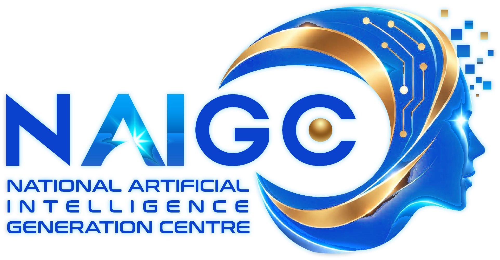
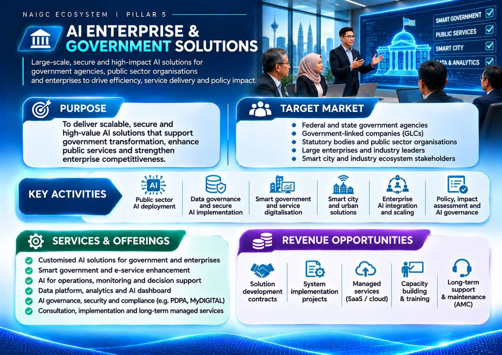

Large-scale, secure and high-impact AI solutions for government agencies, public sector organisations and enterprises to drive efficiency, service delivery and policy impact.
To deliver mission-critical, secure and high-value AI platforms that accelerate government transformation, elevate public service delivery and fortify sovereign data capabilities.
